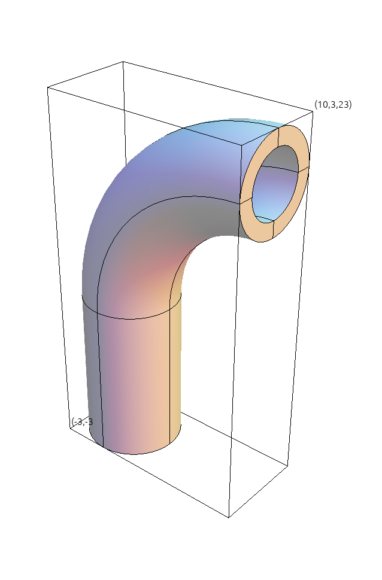
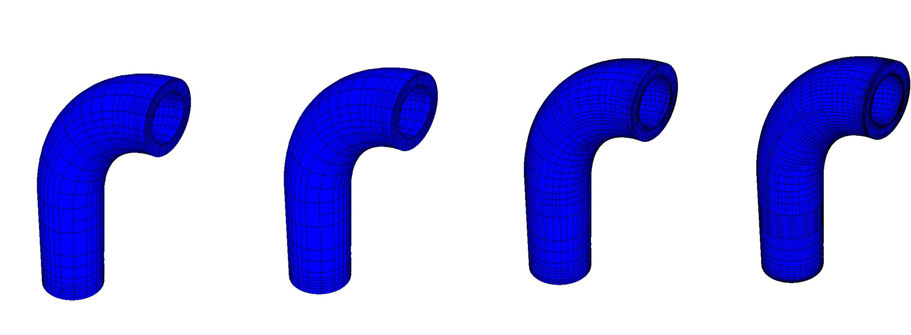

Poisson Problem with AMR
by Jiahao Liu and Prathik Narayanan, Brown University
30 minutes intermediate
Example 6 Objectives
Learn to use the ZZ error estimator to drive local mesh refinement in 2D and 3D.
Explore both conforming and non-conforming refinements (triangles, quads, tetrahedra, hexes).
Practice interpolation of solution fields between coarse and refined meshes.
Note
Poisson's equation
The Poisson Equation is a partial differential equation (PDE) that can be used to model steady-state heat conduction, electric potentials, and gravitational fields. In mathematical terms, we write
$$ -\Delta u = f, $$
where u is the potential field and f is the source function. This PDE is a generalization of the Laplace Equation.
To approximately solve the above continuous equation on computers, we need to discretize it by introducing a finite (discrete) number of unknowns to compute. In the Finite Element Method (FEM), this is done using the concept of basis functions.
Instead of calculating the exact analytic solution u, we approximate it
$$ u \approx u_h := \sum_{j=1}^n c_j \varphi_j $$
where $u_h$ is the finite element approximation with degrees of freedom (unknown coefficients) $c_j$, and $\varphi_j$ are known basis functions. The FEM basis functions are typically piecewise-polynomial functions on a given computational mesh, which are only non-zero on small portions of the mesh.
To solve for the unknown coefficients in (2), we consider the weak (or variational) form of the Poisson equation. This is obtained by first multiplying with another (test) basis function $\varphi_i$:
$$-\sum_{j=1}^n c_j \int_\Omega \Delta \varphi_j \varphi_i = \int_\Omega f \varphi_i$$
and then integrating by parts using the divergence theorem:
$$\sum_{j=1}^n c_j \int_\Omega \nabla \varphi_j \cdot \nabla \varphi_i = \int_\Omega f \varphi_i$$
Here we are assuming that the boundary term vanishes due to homogeneous Dirichlet boundary conditions corresponding, for example, to zero temperature on the whole boundary.
Since the basis functions are known, we can rewrite (4) as
$$ A x = b $$
where
$$ A_{ij} = \int_\Omega \nabla \varphi_j \cdot \nabla \varphi_i $$
$$ b_i = \int_\Omega f \varphi_i $$
$$ x_j = c_j $$
This is a $n \times n$ linear system that can be solved directly or iteratively for the unknown coefficients. Note that we are free to choose the computational mesh and the basis functions $\varphi_i$, and therefore the finite space, as we see fit.
Note
Adaptive Mesh Refinement (AMR)
Adaptive mesh refinement (AMR) has been widely used in scientific computing to get better accuracy with minimal degrees of freedom. Instead of uniformly refining the mesh, AMR only refines the mesh in regions where the solution requires higher resolution.
The main ideas behind AMR are:
- Localized refinement
Refine the mesh where the solution needs more resolution (higher error regions).
- Equidistribution of error
After sufficient refinement, the discretization error should be approximately uniform across all elements, optimizing resource usage.
- Efficiency
Compared to uniform refinement, AMR achieves a desired accuracy with significantly fewer degrees of freedom (DoFs), leading to major computational savings.
Motivation for AMR in Poisson's equation
-
Singularities at reentrant corners
-
Sudden changes inside the domain caused by strong force terms
-
Boundary layers near domain boundaries
AMR Algorithm:
- Solve: Find $u_h \in V_h$ such that
$$ a(u_h, v_h) = (f, v_h) $$
for all $v_h \in V_h.$
-
Estimate: For each element K, compute the local error indicator $\eta_K$ (explained in detail in next section).
-
Mark: Select elements K where $\eta_K$ is relatively large. For instance, marking only the elements $K \in T_h$ satisfying $$ \eta_K > \theta \max_{K' \in T_h} \eta_{K'}, $$ where $\theta \in (0,1)$ controls the maximum fraction of error. This ensures that only the elements with relatively large errors are refined.
-
Refine: Refine the selected elements to create a new mesh $T_h'$. A conforming refinement is used for triangles/tetrahedra, and a non-conforming refinement is used for quadrilaterals/hexahedra.
-
Transfer: Interpolate or project $u_h$ onto the new finite element space $V_h'$.
-
Repeat: Solve $\rightarrow$ Estimate $\rightarrow$ Mark $\rightarrow$ Refine $\rightarrow$ Transfer until convergence is achieved or a target number of degrees of freedom (DoFs) is reached.
References
- Berger, M.J. and Oliger, J., 1984. Adaptive mesh refinement for hyperbolic partial differential equations. Journal of computational Physics, 53(3), pp.484-512.
- Berger, M.J. and Colella, P., 1989. Local adaptive mesh refinement for shock hydrodynamics. Journal of computational Physics, 82(1), pp.64-84.
Zienkiewicz–Zhu (ZZ) Error Estimator
The Zienkiewicz–Zhu (ZZ) error estimator is a popular recovery-based a posteriori error indicator for finite element solutions. It works by comparing the raw finite-element gradient (or stress) field to a “smoothed” (recovered) field and using their difference as an estimate of the local discretization error.
Key Ideas
- Finite Element Gradient From the computed solution $u_h$, you can evaluate the element-wise gradient (or stress)
$$ \nabla u_h \quad (\text{or } \sigma_h) . $$
-
Recovery Build a higher-quality, continuous gradient field $\nabla u^\ast$ (or $\sigma^\ast$) by fitting a patch-wise polynomial through neighboring element values or applying a weighted averaging of nodal slopes.
-
Local Error Indicator On each element $K$, define $$ \eta_K = \|\nabla u^\ast - \nabla u_h\|_{L^2(K)} \quad\bigl( \text{or } \|\sigma^\ast - \sigma_h\| \bigr). $$
-
Global Estimate Sum or square–sum over all elements to get a global error estimate:
$$ \eta = \Bigl(\sum_{K} \eta_K^2\Bigr)^{1/2}. $$
Advantages
- Simplicity: Only requires post-processing of existing solution gradients.
- Accuracy: Often yields reliable error localization even on unstructured meshes.
- Efficiency: Computational cost is low compared to residual-based estimators.
Typical Workflow
- Solve the PDE with your chosen finite element discretization.
- Compute element-wise gradients $\nabla u_h$ or stresses $\sigma_h$.
- Recover a smoothed gradient $\nabla u^*$ or stress $\sigma^\ast$.
- Estimate $\eta_K$ on each element and mark for refinement.
- Refine mesh elements with largest $\eta_K$ and repeat.
Reference: [1] Zienkiewicz, O.C. and Zhu, J.Z., The superconvergent patch recovery and a posteriori error estimates. Part 1: The recovery technique. Int. J. Num. Meth. Engng. 33, 1331-1364 (1992).
[2] Zienkiewicz, O.C. and Zhu, J.Z., The superconvergent patch recovery and a posteriori error estimates. Part 2: Error estimates and adaptivity. Int. J. Num. Meth. Engng. 33, 1365-1382 (1992).
Annotated Example 6
Below is the classification of each mesh file used in the sample runs, indicating the dimension, element type, and whether it is conforming or non-conforming:
| Mesh File | Dimension | Element Type |
|---|---|---|
square-disc.mesh |
2D | triangles |
square-disc-nurbs.mesh |
2D | NURBS quadrilaterals |
star.mesh |
2D | quadrilaterals |
escher.mesh |
3D | tetrahedra |
fichera.mesh |
3D | hexahedra |
disc-nurbs.mesh |
2D | NURBS quadrilaterals |
ball-nurbs.mesh |
3D | NURBS hexahedra |
pipe-nurbs.mesh |
3D | NURBS hexahedra |
star-surf.mesh |
2D surface | quadrilaterals |
square-disc-surf.mesh |
2D surface | triangles |
amr-quad.mesh |
2D | quadrilaterals |
MFEM's Example 6 implements the Laplace equation $-\Delta u = 1$ with homogeneous Dirichlet boundary conditions, enriched by a simple adaptive mesh refinement (AMR) loop. The refinements can be conforming (triangles, tetrahedra) or non-conforming (quadrilaterals, hexahedra) based on a Zienkiewicz–Zhu (ZZ) error estimator. Example 6 demonstrates MFEM’s support for 2D/3D, linear/curved and surface meshes, as well as function interpolation between coarse and refined meshes and persistent GLVis visualization. The source file is examples/ex6.cpp.
Below we highlight selected portions of the example code and connect them with the description above. You can follow along by opening ex6.cpp in your editor. In the settings of this tutorial, the visualization will automatically update in the GLVis browser window.
The Mesh
The computational mesh for this problem is shown in the table. For instance, it could be set to pipe-nurbs.mesh. We can use GLVis to generate a visualization of this mesh by running glvis -m
pipe-nurbs.mesh.

The code in lines 94-96
loads the mesh from the given file, mesh_file and creates the corresponding
MFEM object mesh of class Mesh.
Mesh mesh(mesh_file, 1, 1);
int dim = mesh.Dimension();
int sdim = mesh.SpaceDimension();
If the mesh is NURBS, it is uniformly refined twice and then converted to a quadratic curved mesh (lines 101-108):
if (mesh.NURBSext)
{
for (int i = 0; i < 2; i++)
{
mesh.UniformRefinement();
}
mesh.SetCurvature(2);
}
Defining Variables and Spaces
In the next block of code, we create the finite element space, i.e., specify the finite element basis functions on the mesh. This involves the MFEM class, FiniteElementSpace, which connects the space and the mesh. The code in lines 112-113 is essentially:
H1_FECollection fec(order, dim);
FiniteElementSpace fespace(&mesh, &fec);
Set up the error estimator
We declare the ZZ error estimator, mentioned earlier, in lines 160-174.
ErrorEstimator
-
ZienkiewiczZhuEstimator: computes element errors by subtracting a “smoothed” gradient (recovered viaDiffusionIntegrator) from the original. -
LSZienkiewiczZhuEstimator: a least‐squares variant activated with-ls, useful for certain mesh types. -
In 3D on non-hexahedral meshes, Tikhonov regularization improves conditioning.
if (LSZZ)
{
estimator = new LSZienkiewiczZhuEstimator(*integ, x);
if (dim == 3 && mesh.GetElementType(0) != Element::HEXAHEDRON)
{
dynamic_cast<LSZienkiewiczZhuEstimator *>
(estimator)->SetTichonovRegularization();
}
}
else
{
auto flux_fes = new FiniteElementSpace(&mesh, &fec, sdim);
estimator = new ZienkiewiczZhuEstimator(*integ, x, flux_fes);
dynamic_cast<ZienkiewiczZhuEstimator *>(estimator)->SetAnisotropic();
}
We create a threshold refiner to determine when to refine the mesh (lines 180-181).
ThresholdRefiner
-
SetTotalErrorFraction(0.7): marks elements whose cumulative error reaches 70% for refinement. This corresponds to setting $\theta=0.7$ in (10). -
Supports both conforming and non-conforming refinements. Non-conforming refinement is an option (
-nc) for simplex meshes.
ThresholdRefiner refiner(*estimator);
refiner.SetTotalErrorFraction(0.7);
Adaptive Mesh Refinement loop
Lines 185–275 comprise the main AMR loop. The process can be summarized as a sequence of several steps.
Iteration start & logging
This begins a new AMR iteration, retrieving the current number of true DoFs (cdofs) and printing the iteration index and DoF count.
for (int it = 0; ; it++)
{
int cdofs = fespace.GetTrueVSize();
cout << "\nAMR iteration " << it << endl;
cout << "Number of unknowns: " << cdofs << endl;
Assembly and interpolation
Assemble the right-hand side and stiffness matrix and interpolate the Dirichlet boundary conditions onto the GridFunction x.
b.Assemble();
// 14. Set Dirichlet boundary values in the GridFunction x.
// Determine the list of Dirichlet true DOFs in the linear system.
Array<int> ess_tdof_list;
x.ProjectBdrCoefficient(zero, ess_bdr);
fespace.GetEssentialTrueDofs(ess_bdr, ess_tdof_list);
// 15. Assemble the stiffness matrix.
a.Assemble();
Forming the linear system
The linear system is formed (lines 206-210), solved (lines 218-231), and the solution is recovered through the following steps (line 236):
The method FormLinearSystem takes the bilinear form a, linear form b, current solution x, and a list of essential boundary degrees of freedom ess_tdof_list. It eliminates boundary conditions, handles any constraints, and sets up the system for the true degrees of freedom only. The flag copy_interior = 1 ensures that the interior (unconstrained) DOFs are copied properly for consistency.
OperatorPtr A;
Vector B, X;
const int copy_interior = 1;
a.FormLinearSystem(ess_tdof_list, x, b, A, X, B, copy_interior);
This process produces A (an OperatorPtr for the assembled system matrix), B (the right-hand side vector), X (the unknowns vector to solve for).
Solving the linear system
There are two solving strategies depending on whether partial assembly (pa) is enabled:
Full Assembly Mode (pa == false)
-
If MFEM is not compiled with
SuiteSparse, a symmetric Gauss-Seidel smoother (GSSmoother) is used as a preconditioner for a preconditioned conjugate gradient (PCG) solver. -
If MFEM is compiled with
SuiteSparse, the system is solved directly using theUMFPackSolver(a direct sparse solver with METIS ordering for efficiency).
Partial Assembly Mode (pa == true)
-
A simple diagonal (Jacobi) preconditioner (
OperatorJacobiSmoother) is used. -
PCGis used with more iterations allowed (up to 2000 iterations) since partial assembly typically results in slightly less robust preconditioning.
if (!pa)
{
// Full assembly mode
#ifndef MFEM_USE_SUITESPARSE
GSSmoother M((SparseMatrix&)(*A));
PCG(*A, M, B, X, 3, 200, 1e-12, 0.0);
#else
UMFPackSolver umf_solver;
umf_solver.Control[UMFPACK_ORDERING] = UMFPACK_ORDERING_METIS;
umf_solver.SetOperator(*A);
umf_solver.Mult(B, X);
#endif
}
else
{
// Partial assembly mode
OperatorJacobiSmoother M(a, ess_tdof_list);
PCG(*A, M, B, X, 3, 2000, 1e-12, 0.0);
}
Recovering the finite element solution
After solving the system for the true DOFs X, the full finite element solution x is reconstructed. Constrained DOFs (like boundary conditions or hanging nodes) are interpolated appropriately. As a result, x.Size() may be larger than X.Size().
a.RecoverFEMSolution(X, b, x);
Termination condition
The loop terminates if the number of degrees of freedom exceeds a preset limit max_dofs, ensuring that the refinement or solution process doesn't consume too much memory or computation time.
if (cdofs > max_dofs)
{
cout << "Reached the maximum number of dofs. Stop." << endl;
break;
}
Adaptive refinement loop
After solving the linear system, the mesh is refined adaptively (lines 255-260) using the marking strategy (10), and the finite element space and solution are updated (lines 268-269) accordingly.
The method refiner.Apply(mesh) first computes local error indicators using the error estimator, then selects elements for refinement based on a marking strategy. It refines the selected elements to be subdivided in order to improve solution accuracy ($h$-refinement). After refinement, refiner.Stop() checks if a stopping criterion, such as reaching a target error level or maximum mesh size, has been met, and exits the loop if necessary.
refiner.Apply(mesh);
if (refiner.Stop())
{
cout << "Stopping criterion satisfied. Stop." << endl;
break;
}
Update the finite element space and solution
After mesh refinement, fespace.Update() updates the finite element space to match the new mesh and computes an interpolation matrix. Then, x.Update() uses this matrix to transfer the old solution onto the new space, providing a good initial guess that helps reduce solver iterations in the next step.
fespace.Update();
x.Update();
Update bilinear and linear forms
The methods a.Update() and b.Update() rebuild the internal data structures associated with the new mesh and finite element space.
a.Update();
b.Update();
Finally, after the refinement loop is completed, the error estimator object is deleted to free memory (line 277).

The figure above shows a sequence of adaptively refined meshes produced by running ex6.cpp with the initial mesh pipe-nurbs.mesh.
Back to the Getting Started page.